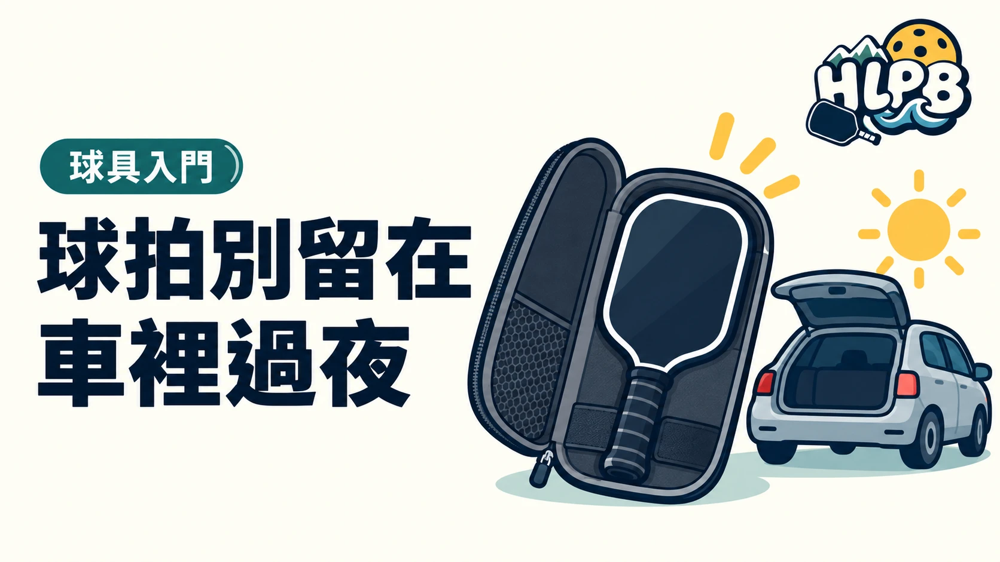

打完球，把球袋留在車上很方便，但不建議把球拍長期放在車內。
Selkirk 的保養指南建議避開極端溫度，將球拍放在乾燥、室溫的地方。拍套可以保護表面，不能取代合適的存放環境。
回家時順手把球拍帶進室內。不同材質與品牌若有另外的保養規定，就依原廠說明處理。
短程運送與長期存放，是兩件事
球拍隨車移動難以完全避免，重點是抵達後要把它帶走，不把車子當成固定器材櫃。拍套主要減少表面碰擦，不能據此認定拍子不受車內環境影響。也沒有一個可套用所有品牌、所有車況的『放幾小時一定安全』答案。
回家收拍，可以固定做這三步
先取出球拍，確認握把與拍面沒有明顯水分；再查看拍套內是否混入濕毛巾或汗濕衣物；最後依原廠指示，放到乾燥、溫度較穩定的位置。這是 HLPB 的日常收納建議，不需要為了保養額外追求複雜用品。
| 用品或作法 | 能處理的需求 | 不能直接推論 |
|---|---|---|
| 拍套 | 減少收納時的碰擦 | 有拍套就可以長時間留車內 |
| 球袋 | 集中整理器材 | 袋內一定乾燥或隔絕高溫 |
| 打完先擦乾 | 處理表面汗水與水分 | 能修復已發生的結構問題 |
已經放過車內，需要立刻換拍嗎？
不必只因放過車內就直接判定球拍損壞。先檢查外觀、握柄與擊球反應，記錄任何異常；有疑慮時提供型號及使用情形給原廠或購買通路判斷。不要自行加熱、冷凍或拆拍來『修復』，也不要在沒有檢查資料時把所有失誤歸因於存放。
參考：Selkirk 球拍保養指南。
最後查證：2026-10-19｜資料來源：Selkirk
返回文章列表